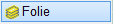
Alle Zeichenelemente einer Folie auswählen und auslagern.
|
Hinweis: |
|
Wenn zu den auszulagernden Elementen Bewehrungsverlegungen gehören, werden diese automatisch ermittelt und markiert. Dies geschieht auch, wenn die Auszüge nicht zu der gewählten Folie gehören. Auszüge können nur zusammen mit der verlegten Bewehrung ausgelagert werden. |

Optionen |
Beschreibung |
|---|---|
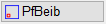 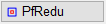 |
PfBeib (Plotfläche unverändert): Die ausgelagerte Teilzeichnung wird mit den gleichen Koordinaten gespeichert wie die Originalzeichnung. Das bedeutet, dass sich der Ausschnitt exakt an der gleichen Position befindet. Damit lässt sich die ausgelagerte Datei später wieder an der gleichen Stelle einfügen. PfRedu (Plotfläche angepasst): Die Teilzeichnung wird auf einer Plotfläche gespeichert, die nur um einen kleinen Betrag größer ist als die maximale Ausdehnung in X- und Y-Richtung. Z. B. für Details, die immer wieder an neuen Positionen in Zeichnungen eingefügt werden. |
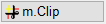 |
o.Clip (nur ganze Elemente): Nur ganze Elemente und Gruppen werden ausgelagert. m.Clip (Bereich ausschneiden): Elemente werden an der rechteckigen Rahmengrenze geschnitten. |
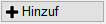 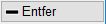 |
Hinzuf (Elemente hinzufügen): Der Auswahl weitere Elemente hinzufügen. Entfer (Elemente entfernen): Elemente aus der vorhandenen Auswahl entfernen. |
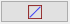 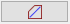 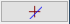 |
Auswahlrahmen rechteckig / polygonal / einzelne Elemente fangen. |
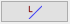 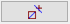 |
Zuletzt markiertes erneut markieren / automatischer Elementfang. |

So wird's gemacht:
§Klicken Sie ein Element an, das in der auszulagernden Folie liegt, oder geben Sie die Foliennummer ein, auf der die gewünschten Zeichenelemente liegen und bestätigen Sie mit der Eingabetaste. [Welche Folie].
Der Dialog Zeichnung speichern wird geöffnet.
§Wählen Sie das gewünschte Verzeichnis und geben Sie einen Dateinamen an.
§Klicken Sie auf OK.
Die auf der gewählten Folie liegenden und ggf. damit verknüpften Verlegungen werden in der angegebenen Zeichnung gespeichert.
Zugehörige Referenzen: